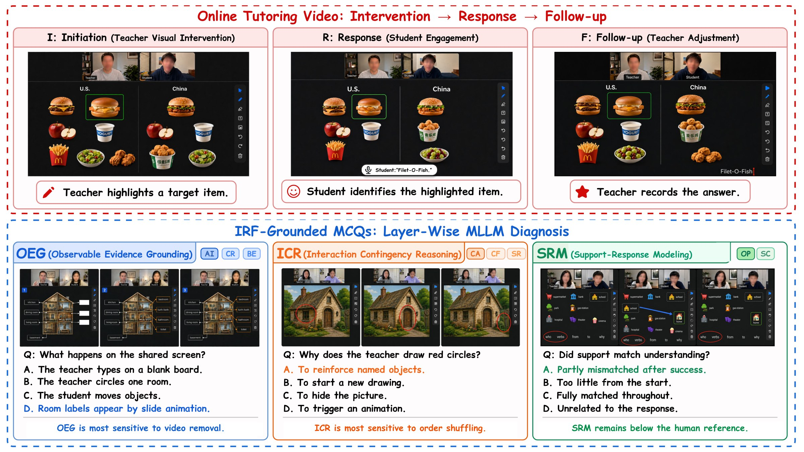
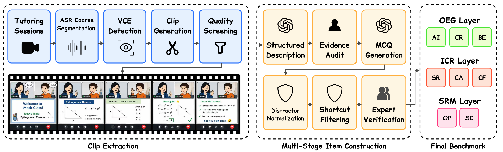

Abstract
Understanding a one-to-one tutoring video requires more than recognizing its events. A model must connect a visible teacher intervention to the learner response it elicits and to the follow-up adjusted to that response. Existing video and educational-dialogue benchmarks typically emphasize event recognition, temporal reasoning, social-state inference, or transcript-based interaction, but rarely diagnose this action–response–adjustment relation. We introduce VIRA-Bench, a focused diagnostic benchmark for short-horizon pedagogical contingency in one-to-one online tutoring. VIRA-Bench contains 1,005 tutoring clips and 1,322 multiple-choice questions with researcher evidence audit and expert verification, organized into Observable Evidence Grounding (OEG), Interaction Contingency Reasoning (ICR), and Support-Response Modeling (SRM). Across 11 models, the best reaches 61.3%, well below the 91.0% human reference on a stratified subset, and ICR generally has the lowest layer accuracy among leading models. Under controlled input manipulations, removing video most strongly degrades OEG, whereas disrupting temporal order most strongly degrades ICR. Free-response, Stem+Options, and synchronized-shuffle controls show that response format, static question cues, and video–ASR mismatch do not explain these layer-specific patterns. The results identify distinct behavioral evidence dependencies without claiming an internal architectural mechanism.
Benchmark
Clips are cut from de-identified one-to-one online tutoring sessions, each containing one complete 15–60 second exchange. Questions are generated from audited evidence descriptions, filtered for option shortcuts, and verified by education experts. Construction and evaluation use disjoint model sets.

OEG 497 · 38%
Observable Evidence Grounding
ICR 529 · 40%
Interaction Contingency Reasoning
SRM 296 · 22%
Support-Response Modeling
Results
Accuracy (%) under Video+ASR input. All models stay far below the human reference, and ICR is the most consistent weakness.
| Model | OEG | ICR | SRM | All |
|---|---|---|---|---|
| Human reference† | 92.0 | 88.0 | 94.0 | 91.0 |
| Gemini 3 Pro | 63.8 | 57.7 | 63.9 | 61.3 |
| Gemini 3 Flash | 62.0 | 55.0 | 64.2 | 59.7 |
| Kimi-K2.5 | 60.8 | 50.1 | 64.9 | 57.4 |
| MiMo-V2.5 | 57.7 | 53.7 | 61.1 | 56.9 |
| Qwen3.6-Plus | 55.1 | 54.3 | 60.1 | 55.9 |
| Qwen3-VL-235B-Think | 45.1 | 39.3 | 45.9 | 43.0 |
| Qwen3.6-Flash | 43.9 | 36.7 | 43.6 | 40.9 |
| Qwen3-VL-235B-Inst | 39.4 | 34.6 | 41.9 | 38.0 |
| Qwen3.5-Flash | 21.9 | 24.0 | 30.4 | 24.7 |
| Qwen3-VL-32B-Think | 21.3 | 22.7 | 22.3 | 22.1 |
| Qwen3-VL-32B-Inst | 19.3 | 20.4 | 22.0 | 20.3 |
† Stratified 200-question subset. Models are evaluated on all 1,322 questions. Subtask scores and confidence intervals are in the paper.
Removing video hurts OEG most. Shuffling the order of visual segments hurts ICR most, and a synchronized video+ASR shuffle reproduces the same drop, so the effect is not caused by video–transcript mismatch.
Gemini 3 Flash
Qwen3.6-Plus
BibTeX
@inproceedings{wang2026virabench,
title = {{VIRA-Bench}: Diagnosing Pedagogical Contingency Understanding
in Online Tutoring Videos},
author = {Wang, Weihang and Gu, Hansu and Liu, Guanming and
Zhang, Peng and Gu, Ning and Lu, Tun},
booktitle = {Proceedings of the 2026 Conference on Empirical Methods
in Natural Language Processing},
year = {2026}
}